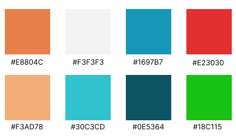

Brand Design
Animation & SFX
Interaction Design

Overview
For this project, I redesigned an app, Lingvano, as Cosign. I redesigned the branding including the logo, typography, and iconography. The primarily reason for the redesign was to improve the interaction design (IxD), specifically the app's microinteractions.
I used Figma for layout and branding design, as well as Adobe Illustrator and Photoshop. To create the animated video, I utilized Adobe After Effects together with figma to animate the prototype.

What is Cosign?
CoSign is a mobile app meant to make learning basic American Sign Language (ASL) easy and fun to learn. Through interactive lessons taught by Deaf instructors, users can pick up conversational ASL to connect and communicate with other ASL users.
Taking inspiration and elements from the app, Lingvano, I created a prototype focused on rebranding and IX for my Interaction Design class. This app introduces basic American Sign Language to new users through lessons and quizzes.
Why Lingvano?
Lingvano enables more people to learn basic ASL and inspires them to communicate directly with people who primarily use ASL, commonly people who are D/deaf and hard of hearing. Though its mission is admirable, the app's visual design and IX is lacking heavily. For an app that teaches a language heavily based on expressiveness and movement, it could be improved with a new look.
Original App Interface
Original Interaction (IX) Flow
Lingvano's Pain Points
- Bland design/graphics
- Confusing when to just observe/continue and when to interact with a certain slide within a lesson
- Misunderstanding the difference between direct translation and English translation
User Needs?
- Easily accessible and self-paced lessons
- Strong visuals and clear video demonstrations of ASL Interactive lessons with immediate feedback
Rebrand
Color Scheme
The color scheme pictured above adds an element of contrast and playfulness, which relates to how much expressiveness is vital when communicating in ASL. The blues and oranges are bright, lively, and encouraging to the user to keep progressing through lessons.
Typography
Typography was simple in the app. The two main typographic groups were the body text font and the decorative logo font. The text used in lessons, Noto Sans, required the user to read and comprehend the words so it needed to be clean and clear. The second decorative font, Lobster Two, was primarily used as a memorable logo.
New Name Brainstorming
- Aisili
- SignON
- AmbiSign
- AmbiASL
- InterSign
- CoSign
These names all included ideas related to either American Sign Language (ASL) or the concept of sign language. They also incorporated ideas of "together", uniting people hearing and D/deaf through language and communication. Eventually, CoSign was choosen as it was simple, intuitive, and most clearly related to the app's content and mission.
Iconography and Logo Design
The new logo is a simplified version of the ASL sign for "together" which corresponds with the new name's prefix, "Co-". The icons were designed have better consistency with the new logo. The logo and icons incorporate the new color scheme and design elements to create a playful user experience.
Initial Page Sketches
These sketches layout some basic ideation for the app's new visual components. Some sketches represent homepages, questions, results and lessons.